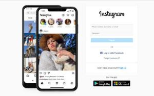
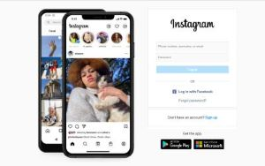

1 class Developer { 2 constructor() { 3 this.name = "Kabilan C"; 4 this.role = "Frontend Developer" 5 this.skills = ['JavaScript','Vue JS'] 6 } 7 }
Hello, I’m
Kabilan Chandran
Passionate front end developer with 2 years of experience in developing responsive websites. Proficient in JavaScript , VueJs , CSSTech Stack


About Me
I'm a Frontend Web Developer building the Front-end of Websites and Web Applications that leads to the success of the overall product. Check out some of my work in the Projects section. I also like sharing content related to the stuff
that I have learned over the years in Web Development so it can help other people of the Dev Community. Feel free to Connect or Follow me on my Linkedin where I post useful content related to Web Development and Programming I'm open to Job opportunities where I can contribute, learn and grow. If you have a good opportunity that matches my skills and experience then don't hesitate to contact me.
Skills
Project

Instagram
uccess of the overall product. Check out some of my work in the
Projects section. I also like sharing content related to the stuff
that I have learned over the years in Web Development so it can
help other people of the Dev Community. Feel free to Connect or
Follow me on my Linkedin where I post useful content related to
Web Development and Programming I'm open to Job opportunities

Instagram
uccess of the overall product. Check out some of my work in the Projects section. I also like sharing content related to the stuff that I have learned over the years in Web Development so it can help other people of the Dev Community. Feel free to Connect or Follow me on my Linkedin where I post useful content related to Web Development and Programming I'm open to Job opportunities